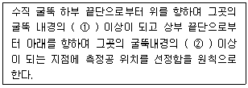

대기환경산업기사 (2004-05-23 기출문제)
1과목: 대기오염개론
1. 다음의 온실가스중 온실효과에 대한 기여도가 가장 낮은 것은?
- CH4
- CFCS
- NO2
- CO2
(정답률: 알수없음)

2. 프로판가스 100kg을 액화시켜 만든 기체연료가 기화될 때의 용적은 약 몇 Sm3 인가?
- 43
- 51
- 74
- 101
(정답률: 알수없음)
3. 바람장미는 무엇을 나타내는 것인가?
- 바람의 선회빈도와 크기
- 바람의 풍향별 발생빈도와 풍속
- 바람의 가속빈도와 온열
- 바람의 생성빈도와 소멸
(정답률: 알수없음)
4. 대도시에서는 열방출량이 많은데 비해 외부로 확산이 잘 안되기 때문에 시내온도가 주변온도 보다 높게 되며 비가 많이 오고 안개가 자주 생기는 현상이 발생된다. 이 현상을 무엇이라 하는가?
- Down Wash 현상
- Down draught 현상
- Heat island 현상
- Heat dome 현상
(정답률: 알수없음)
5. 염소(Cl2 : 분자량 71) 2 V/V ppm에 상당하는 W/W ppm은? (단, 0℃, 1기압, 공기밀도 1.293kg/m3 기준)
- 2.5
- 3.2
- 3.7
- 4.9
(정답률: 알수없음)
6. 건조한 대기(공기)의 화학적구성 성분의 분포(ppm)순서를 가장 알맞게 나타낸 것은?
- O2 ＞ CO2 ＞ Ar
- CO2 ＞ O2 ＞ Ar
- O2 ＞ Ar ＞ CO2
- CO2 ＞ Ar ＞ O2
(정답률: 알수없음)
7. 대기오염농도를 추정하기 위한 '상자모델'의 이론을 전개하기 위한 가정과 가장 거리가 먼 것은?
- 고려되는 공간에서 오염물의 농도는 균일하다.
- 오염물 방출원이 지면전역에 균등히 분포되어 있다.
- 오염물은 원점으로부터 계속적으로 방출된다.
- 오염물의 분해는 1차반응에 의한다.
(정답률: 알수없음)
8. 황화수소에 대한 강한 식물이 아닌 것은?
- 복숭아
- 토마토
- 딸기
- 사과
(정답률: 알수없음)
9. 대도시의 아황산가스(SO2)의 평균농도가 0℃, 1기압에서 0.03ppm이다. 이 농도를 ㎍/Sm3의 단위로 환산하면?
- 85.7
- 171.4
- 257.3
- 342.8
(정답률: 알수없음)
10. 30℃, 750mmHg 상태에서의 대기가스의 용적 100m3를 표준 상태로 환산한다면 몇 Nm3 인가?
- 88.9Sm3
- 92.9Sm3
- 1⑤.9Sm3
- 119.9Sm3
(정답률: 알수없음)
11. 대기오염 역사에 관한 설명 중 옳지 않은 것은?
- 1952년 영국 런던 : 주 오염원은 석탄 연료(SOX, CO)
- 1930년 벨기에 뮤즈계곡 : SO2, H2SO4 mist, 불소화합물(무풍)
- 1954년 미국 로스엔젤레스(LA) : 광화학 반응 생성물
- 1948년 미국 펜실바니아 도노라 : 황화수소누출
(정답률: 알수없음)
12. 다음의 대기오염물질 중 비중이 가장 큰 것은?
- HCHO
- CS2
- NO
- NO2
(정답률: 알수없음)
13. 대기권은 수직온도분포에 따른 4개의 권역으로 구분할 수있다. 이 중 오존의 생성과 분해가 가장 활발하게 일어나는 곳은 어느 권역인가?
- 대류권
- 성층권
- 중간권
- 열권
(정답률: 알수없음)
14. 연기의 배출속도가 50m/sec, 평균 풍속이 300m/min인 경우, 굴뚝의 유효상승높이가 30m 라면 굴뚝의 직경크기(m)는? (단, Δ H=1.5× (VS/U)× D 식 적용)
- 1.0m
- 1.5m
- 2.0m
- 2.5m
(정답률: 알수없음)
15. 런던 대기오염 사건의 지역에 발생했던 기온역전층의 종류는?
- 복사형
- 침강형
- 난류형
- 전선형
(정답률: 알수없음)
16. 체적이 100m3 인 복사실의 공간에서 오존(O3)의 배출량이 분당 0.4mg 인 복사기를 연속 사용하고 있다. 복사기 사용전의 실내오존(O3)의 농도가 0.2ppm라고 할 때 3시간 사용 후 오존농도는 몇 ppb인가? (단, 환기가 되지 않음 0℃, 1기압 기준)
- 260
- 380
- 420
- 536
(정답률: 알수없음)
17. 안료, 색소, 의약품, 농약등 제조공업에 이용되며 그 발생원으로는 화학공업, 유리공업, 피혁상 과수원의 분무작업등이고 인체에 피부암, 비중격 천공, 안검부종, 비카타르 등을 유발하는 물질로 가장 적절한 것은?
- 비소
- 납
- 구리
- 카드뮴
(정답률: 알수없음)
18. 지상 25m에서의 풍속이 10m/sec일 때 지상 50m에서의 풍속(m/sec)은? (단, Deacon식 : U/U0 = (Z/Z0)n, n : 0.2 )
- 16.8 m/sec
- 13.2 m/sec
- 11.5 m/sec
- 10.8 m/sec
(정답률: 알수없음)
19. 코리올리 힘에 관한 설명으로 틀린 것은?
- 지구 자전운동에 의하여 생긴다.
- 북반구에서는 물체의 운동방향의 왼쪽으로 작용한다.
- 지구의 극지방에서 최대가 되며 적도지방에서 최소가 된다.
- 바람의 방향을 변화시킨다.
(정답률: 알수없음)
20. 굴뚝상층에서 역전이 발생하여 굴뚝에서 배출되는 연기가 아래쪽으로만 확산되는 형태는?
- looping (환상형)
- fanning (부채형)
- fumigation (훈증형)
- lofting (지붕형)
(정답률: 알수없음)
2과목: 대기오염 공정시험 기준(방법)
21. 배출가스 중 벤젠 농도 2 ∼ 20 V/V ppm 범위의 분석에 가장 적합한 측정법은? (단, 시료 채취량은 10L )
- 이온크로마토그래프법
- 메틸에틸케톤법(흡광 광도법)
- 적정법(차아염소산염법)
- 용량법(질산토륨 - 네오트린법)
(정답률: 알수없음)
22. 환경대기중에 납(Pb)을 분석하기 위한 시험방법 중 공정 시험방법상 주시험방법은?
- 유도결합 플라즈마 분광법
- 원자흡광광도법
- X선 형광법
- 이온크로마토그래프법
(정답률: 알수없음)
23. 굴뚝에서의 먼지측정위치 기준에 대한 내용이다 ( )안에 적절한 내용은?

- ① 2배, ② 4배
- ① 4배, ② 2배
- ① 8배, ② 2배
- ① 2배, ② 8배
(정답률: 알수없음)
24. 악취 판정이 적절히 연결된 것은? (단, 직접관능법 : 악취도 - 악취감도구분 )
- 1 - None
- 3 - Moderate
- 4 - Very Strong
- 7 - Over Strong
(정답률: 알수없음)
25. 다음 중 배출가스중에 함유된 브롬화합물의 측정방법은?
- 티오시안산 제2수은법
- 페놀디술폰산법
- 아세칠아세톤법
- 아르세나조법
(정답률: 알수없음)
26. 분석 대상 가스별 분석방법 및 흡수액이 잘못 기술된 것은?
- 암모니아 → 인도페놀법 → 붕산 용액
- 염화수소 → 질산은법 → 수산화나트륨용액
- 포름알데히드 → 아세틸아세톤법 → 아세틸아세톤 함유흡수액
- 질소산화물 → 페놀디술폰산법 → 과산화수소수
(정답률: 알수없음)
27. 어느 지역에 환경 기준시험을 위한 측정지점의 수는 약 몇 개소인가? (단, 그지역 거주 면적 = 50㎞2, 그지역 인구밀도 =1000명/㎞2, 전국평균인구밀도 = 350명/㎞2이다. 인구비례에 의한 방법기준)
- 6개소
- 12개소
- 24개소
- 48개소
(정답률: 알수없음)
28. 배출가스 중의 휘발성유기화합물질 시료채취장치 중 흡착관법에 관한 설명으로 틀린 것은?
- 각 장치의 연결부위는 진공용 그리스를 사용한다
- 채취관 재질은 유리, 석영, 불소수지 등으로 120℃ 이상까지 가열이 가능한 것이어야 한다
- 밸브는 불소수지, 유리, 석영재질로 가스의 누출이 없는 구조이어야 한다
- 응축기 및 응축수트랩은 유리재질이어야 한다
(정답률: 알수없음)
29. 원자 흡광광도법에서 불꽃을 만들기 위한 조연성가스와 가연성가스의 조합 중 원자외 영역에서의 불꽃자체에 의한 흡수가 적기 때문에 이 파장영역에서 분석선을 갖는 원소의 분석에 적당한 것은?
- 아세틸렌 - 알곤
- 수소 - 공기
- 아세틸렌 - 공기
- 프로판 - 산소
(정답률: 알수없음)
30. 채취관은 배출가스의 흐르는 방향에 대하여 어떻게 설치하여야 하는가?
- 120° 로 장치한다.
- 90° 로 장치한다.
- 60° 로 장치한다.
- 45° 로 장치한다.
(정답률: 알수없음)
31. 굴뚝직경이 4.2m인 원형 굴뚝에서 먼지를 채취하고져 한다. 측정점수는 몇 개인가?
- 16
- 14
- 12
- 8
(정답률: 알수없음)
32. 배출가스중의 크롬화합물을 흡광광도법으로 분석하는 방법에 대한 설명으로 틀린 것은?
- 정량범위는 크롬으로 0.002∼0.⑤mg 이다.
- 과망간산칼륨으로 크롬을 6가로 산화시킨다.
- 과잉의 과망간산칼륨은 아황산나트륨으로 환원시킨다
- 디페닐칼바지드를 가하여 발색시켜 파장 540nm 에서 흡광도를 측정한다.
(정답률: 알수없음)
33. 표준상태 에서 물 4g에 해당되는 수증기의 용적은?
- 약 4ℓ
- 약 5ℓ
- 약 6ℓ
- 약 7ℓ
(정답률: 알수없음)
34. 비분산적외선분석법에서 분석계의 최저 눈금값을 교정하기 위하여 사용하는 가스는?
- 비교가스
- 제로가스
- 스팬가스
- 혼합가스
(정답률: 알수없음)
35. 공정시험방법에서 적용되고 있는 용어의 정의로 알맞지 않은 것은?
- 진공이라 함은 따로 규정이 없는 한 15mmHg이하를 말한다.
- 액의 농도를 표시함에 있어 (1:10)이라 함은 고체 또는 액체성분 1g을 용제에 용해하여 전량을 10mL로 하는 것을 말한다.
- 용액이라 함은 따로 규정이 없는 한 수용액을 말한다
- '항량(恒量)이 될 때까지 건조한다'라 함은 1시간 이상 더 건조할 때 전후무게의 차가 매 g당 0.3mg이하 일 때를 말한다.
(정답률: 알수없음)
36. 10 mmH2O 는 몇 mmHg 인가?
- 0.74 mmHg
- 7.35 mmHg
- 0.45 mmHg
- 4.45 mmHg
(정답률: 알수없음)
37. 배출가스중의 암모니아를 중화적정법으로 측정하고자 한다. 시료 가스채취량이 40ℓ 일 때 분석하기 적합한 시료가스 중 암모니아 농도의 범위는?
- 1 ppm 이상
- 20 ppm 이상
- 50 ppm 이상
- 100 ppm 이상
(정답률: 알수없음)
38. 비분산적외선 분석법을 적용하기 위한 분석계의 구성에 관한 설명으로 틀린 것은?
- 적외선 가스분석계는 고정형분석계와 이동형분석계로 분류한다.
- 광원은 원칙적으로 니크롬선 또는 탄화규소의 저항체에 전류를 흘려 가열한 것을 사용한다.
- 회전섹타는 시료광속과 비교광속을 일정주기로 연속시켜 광학적으로 동화 시키는 것이다.
- 비교셀은 아르곤 또는 질소와 같은 불활성 기체를 봉입하여 사용한다.
(정답률: 알수없음)
39. 다음 화합물중 디에틸디티오 카르바민산은을 클로로포름용액에 흡수시켜 생성되는 적자색 용액의 흡광도를 측정하여 정량하는 것은?
- 불소화합물
- 비소화합물
- 카드뮴화합물
- 질소화합물
(정답률: 알수없음)
40. 배출가스중의 시안화수소측정법중 흡광광도법은 다음중 어느 시약을 사용하는 방법인가?
- 아르센아조Ⅲ
- 나프틸에틸렌 디아민
- 아세틸아세톤
- 피리딘파라졸론
(정답률: 알수없음)
3과목: 대기오염방지기술
41. 전기 집진장치에서 내부 평균 가스속도를 기본유속범위(1∼2m/sec이하)상태로 운전하는 이유로 가장 타당한 것은?
- 충분한 체류시간을 얻기 위하여
- 부압상태를 유지하기 위하여
- 먼지의 재비산 방지를 위하여
- 층류영역으로 운전하기 위하여
(정답률: 알수없음)
42. 충전탑에서 편류현상(channeling effect)을 최소화하기 위한 충전제 직경(d)과 충전탑(D) 직경비(D/d)의 범위로 가장 적절한 것은?
- 2 ~ 4
- 4 ~ 6
- 6 ~ 8
- 8 ~ 10
(정답률: 알수없음)
43. 탄화도 증가에 따른 변화로서 옳지 않은 것은?
- 매연발생률이 증가한다.
- 고정탄소가 증가한다.
- 착화온도가 높아진다.
- 발열량이 증가한다.
(정답률: 알수없음)
44. 탄소 86.4%, 수소 12%, 황 1.6% 되는 중유 1kg을 완전 연소시키는데 필요한 이론공기량은 ?
- 약 8.2 Sm3/kg
- 약 10.9 Sm3/kg
- 약 14.6 Sm3/kg
- 약 17.3 Sm3/kg
(정답률: 알수없음)
45. 국소배기장치 설치시 기본설계를 위해 발생원에서 오염물질의 비산방향, 비산거리 및 후드의 형식을 고려하여 오염물질의 포착점에서의 적정한 흡입속도를 무엇이라 하는가?
- 반송속도
- 확산속도
- 비산속도
- 제어속도
(정답률: 알수없음)
46. 중력집진장치에 관한 설명으로 가장 거리가 먼 것은?
- 침강실내의 처리가스 속도가 작을수록 미립자가 잘 포집된다
- 침강실의 높이가 낮고 길이가 길수록 집진율은 높아진다
- 침강실내의 기류는 와류상태일 때 집진이 잘 된다.
- 입자가 작을 때 침강속도가 작아져 집진이 잘 안된다
(정답률: 알수없음)
47. 가스가 덕트를 통과할 때 발생하는 압력손실에 대한 다음 설명 중 맞는 것은?
- 덕트의 길이에 반비례한다.
- 덕트의 직경에 반비례한다.
- 가스통과 유속에 반비례한다.
- 가스의 밀도에 반비례한다.
(정답률: 알수없음)
48. 유해가스의 흡수처리시 적용되는 '헨리법칙'이 가장 잘 성립되는 기체는?
- SiF4
- HF
- Cl2
- O2
(정답률: 알수없음)
49. 연소가스 분석결과 CO2 13%, O2 7%이며 나머지는 질소가스 일 때 공기비는?
- 2.7
- 2.1
- 1.8
- 1.5
(정답률: 알수없음)
50. 유량이 2,500m3/hr인 배출가스를 흡수탑을 이용하여 제거하고자 한다. 흡수탑의 통과유속을 0.5 m/sec로 할 경우 흡수탑의 직경은 얼마로 설계하여야 하는가?
- 약 0.83m
- 약 1.33m
- 약 1.83m
- 약 2.13m
(정답률: 알수없음)
51. 두 개의 집진장치를 직렬로 연결하여 배출가스중의 먼지를 제거하고자 한다. 입구농도는 14g/m3 이고, 첫 번째와 두 번째 집진장치의 집진효율이 각각 75%, 95%라면 출구 농도는 몇 ㎎/m3인가?
- 175
- 211
- 236
- 241
(정답률: 알수없음)
52. 어떤 집진장치의 압력손실이 600mmH2O, 처리가스량이 750m3/min, 송풍기 효율이 75% 일 때 동력(HP)은?
- 약 132
- 약 145
- 약 156
- 약 168
(정답률: 알수없음)
53. 원심력집진장치에서의 블로우 다운 방식을 설명한 내용중 틀린 것은?
- 원추하부에 가교현상을 촉진시켜 재비산을 방지한다.
- 더스트 박스에서 유입유량의 5~10%에 상당하는 가스를 추출시켜 집진 장치의 기능을 향상시킨다.
- 유효원심력을 증가시킨다.
- 원추 하부 또는 출구에 분진이 퇴적되는 것을 방지한다.
(정답률: 알수없음)
54. 가스흡수장치를 조작방법에 따라 분류하는 경우 기체분산형 흡수장치로 가장 알맞는 것은?
- 단탑
- 충전탑
- 분무탑
- 벤츄리 스크러버
(정답률: 알수없음)
55. 황 2%(무게비)를 포함하는 중유를 시간당 250Kg 연소시키고 있는 보일러에서 배연을 수산화나트륨 수용액으로 세정시켜 탈황하고 있다. 탈황율 100%로 하면 이론적으로 필요한 수산화나트륨은 매시 몇 Kg 인가? (단, Na원자량 23, 모든 황분은 SO2 로 변환된다고 가정)
- 12.5
- 15.5
- 17.5
- 19.5
(정답률: 알수없음)
56. 수소 12%, 수분 0.5%를 함유하는 중유의 고발열량을 측정하였더니 1⑤00 kcal/㎏이었다. 이 중유의 저 발열량은?
- 9850 kcal/㎏
- 9980 kcal/㎏
- 10150 kcal/㎏
- 10250 kcal/㎏
(정답률: 알수없음)
57. 수분에 의한 [입자의 표면장력에 의한 응집력 설명]에 관한 공식으로 알맞는 것은? (단, Fa = 부착력, Ts = 표면장력, Dp = 입자경, 결합각 θ = 0 즉 tan(θ /2)=0 로 가정함)
- Fa = π · Ts · Dp
- Fa = (Ts · Dp) / π
- Fa = (1/π) · (Dp/Ts)
- Fa = π / (Ts · Dp)
(정답률: 알수없음)
58. 어떤 유해가스와 물이 일정 온도에서 평형상태에 있다. 기상의 유해가스의 분압이 40mmHg일 때 수중 유해가스의 농도가 2.7kmol/m3이다. 헨리정수(atm· m3/kmol)는?
- 0.01
- 0.02
- 0.03
- 0.04
(정답률: 알수없음)
59. 충전탑에 사용되는 충진물의 구비조건이라 할 수 없는 것은?
- 압력손실과 충진밀도가 작을 것
- 공극률이 클 것
- 단위용적에 대한 표면적이 클 것
- 액가스 분포를 균일하게 유지할 수 있을 것
(정답률: 알수없음)
60. C8H18의 이론적 완전 연소시 부피기준에서 AFR(Air Fuel Ratio)는?
- 59.5 moles Air/mole Fuel
- 49.5 moles Air/mole Fuel
- 39.5 moles Air/mole Fuel
- 29.5 moles Air/mole Fuel
(정답률: 알수없음)
4과목: 대기환경 관계 법규
61. 초과부과금 산정시 오염물질 1킬로그램당 부과금액이 가장 적은 것은?
- 암모니아
- 이황화탄소
- 먼지
- 황산화물
(정답률: 알수없음)
62. 사업장에서 배출되는 비산먼지 배출허용기준은?
- 0.1㎎/Sm3 이하
- 0.5㎎/Sm3 이하
- 0.1㎍/Sm3 이하
- 0.5㎍/Sm3 이하
(정답률: 알수없음)
63. 다음 중 대기환경보전법령에 의한 초과부과금 부과대상 오염물질이 아닌 것은?
- 염화수소
- 불소화합물
- 악취
- 벤젠
(정답률: 알수없음)
64. 특정대기유해물질인 것은?
- 스틸렌
- 아크로레인
- 황화메틸
- 아세트알데히드
(정답률: 알수없음)
65. 일일유량 산정을 위한 측정유량의 단위는?
- m3/sec
- m3/min
- m3/hr
- m3/day
(정답률: 알수없음)
66. 환경부장관이 설치하는 대기오염 측정망의 종류가 아닌것은?
- 지역배경농도측정망
- 유해대기물질측정망
- 시정거리 측정망
- 광화학오염물질 측정망
(정답률: 알수없음)
67. 대기환경기준 항목 중 미세먼지 입자의 크기 기준으로 적절한 것은?
- 0.1 ㎛ 이하
- 1.0 ㎛ 이하
- 10 ㎛ 이하
- 100 ㎛ 이하
(정답률: 알수없음)
68. 생활악취시설의 개선 최장 기간으로 알맞는 것은? (단, 연장기간 포함 )
- 6월 범위내
- 9월 범위내
- 1년 범위내
- 1년 6월 범위내
(정답률: 알수없음)
69. 대기배출시설을 설치 운영하는 사업장에 대하여 조업정지를 명하여야 하는 경우로써 그 조업정지가 주민의 생활기타 공익에 현저한 지장을 초래할 우려가 있다고 인정되는 경우 조업정지 처분에 갈음하여 과징금을 부과할 수 있다 이 때 과징금의 부과금액 산정시 적용되지 않는 것은?
- 조업정지일수
- 오염물질별부과금액
- 1일당부과금액
- 사업장 규모별 부과계수
(정답률: 알수없음)
70. 배출시설 및 방지시설의 개선명령을 이행하지 아니한 경우의 1차 행정 처분 기준은?
- 경고
- 사용금지명령
- 조업정지
- 허가취소
(정답률: 알수없음)
71. 환경 관리인은 누가 임명하는가?
- 환경부장관
- 시,도지사
- 지방환경청장
- 사업자
(정답률: 알수없음)
72. 환경부장관이 총량규제를 실시하고자 하는 경우 반드시 고시하여야 하는 내용과 가장 거리가 먼 것은?
- 규제구역
- 규제오염물질
- 오염물질 저감계획
- 오염물질 규제기준농도
(정답률: 알수없음)
73. 납의 대기 환경기준으로 적절한 것은? (단, 연간평균치, 단위 : ㎍/m3 )
- 0.1 이하
- 0.2 이하
- 0.5 이하
- 1.0 이하
(정답률: 알수없음)
74. 석탄을 연료로 사용하고 있는 시설에 대한 설치기준으로 적절한 것은?
- 배출시설의 굴뚝높이는 100m 이상으로 하되 유효굴뚝높이가 240m 이상인 경우에는 60m이상 100m미만으로 할 수 있다
- 배출시설의 굴뚝높이는 100m 이상으로 하되 유효굴뚝높이가 340m 이상인 경우에는 60m이상 100m미만으로 할 수 있다
- 배출시설의 굴뚝높이는 100m 이상으로 하되 유효굴뚝높이가 440m 이상인 경우에는 60m이상 100m미만으로 할 수 있다
- 배출시설의 굴뚝높이는 100m 이상으로 하되 유효굴뚝높이가 540m 이상인 경우에는 60m이상 100m미만으로 할 수 있다
(정답률: 알수없음)
75. 대기환경보전법상 대기용어의 정의에 대한 설명이 잘못된것은?
- '먼지'라 함은 대기중에 떠다니거나 흩날려 내려오는 입자상물질을 말한다.
- '매연'이라 함은 연소시에 주로 발생하는 유리탄소가 응결한 입자상물질을 말한다.
- '악취'라 함은 황화수소· 메르캅탄류· 아민류 기타 자극성 있는 기체상물질이 사람의 후각을 자극하여 불쾌감과 혐오감을 주는 냄새를 말한다.
- '첨가제'라 함은 탄소와 산소만으로 구성된 물질을 제외한 화학물질로서 자동차 연료에 소량을 첨가하여 자동차의 성능을 향상시키거나 배출물질을 저감시키는 화학물질로 환경부령으로 정하는 것을 말한다.
(정답률: 알수없음)
76. 위임업무 보고사항 중 휘발성유기화합물 배출시설 지도, 점검실적의 보고횟수는?
- 연 6회
- 연 4회
- 연 2회
- 연 1회
(정답률: 알수없음)
77. 고체연료 환산계수 중 중유(C)의 환산계수는? (단, 단위 : 리터(ℓ ), 무연탄(kg) : 1.0 )
- 1.0
- 1.34
- 1.86
- 2.0
(정답률: 알수없음)
78. 환경관리인 등의 교육을 받게 하지 아니한 자에 대한 행정조치로 적절한 것은?
- 200만원 이하의 벌금
- 100만원 이하의 벌금
- 100만원 이하의 과태료
- 50만원 이하의 과태료
(정답률: 알수없음)
79. 법적으로 규정된 환경관리인의 관리사항으로 알맞지 않는 것은?
- 배출시설 및 방지시설의 관리 및 개선에 관한 사항
- 배출시설 및 방지시설의 운영에 관한 기록부의 기록, 보존에 관한 사항
- 자가측정 및 자가측정한 결과의 기록, 보존에 관한사항
- 기타 사업장의 환경오염방지를 위하여 환경부장관이 지시하는 사항
(정답률: 알수없음)
80. 대기오염물질 배출시설 중 폐수 소각시설의 규모 기준으로 알맞는 것은?
- 소각능력이 시간당 25kg 이상
- 소각능력이 시간당 50kg 이상
- 소각능력이 시간당 100kg 이상
- 소각능력이 시간당 150kg 이상
(정답률: 알수없음)